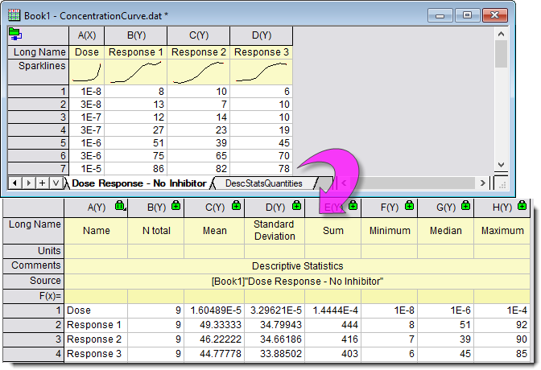
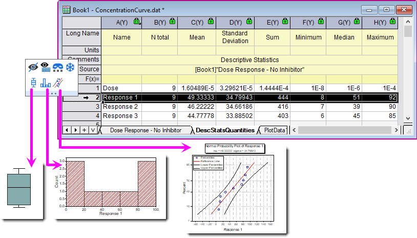

Statistik für gesamtes Blatt
Statistics-on-Whole-Sheet
Einführung
Origin bietet ein einfaches und schnelles Hilfsmittel, um deskriptive Statistiken für alle Spalten im Eingabearbeitsblatt zu berechnen und eine Zusammenfassungsblatt zu erzeugen. Grundlegende Deskriptoren wie die Anzahl der Stichproben, Summe, Mittelwert, Standardabweichung, Maximum und Minimum werden berechnet.
- 
Für weitere Deskriptoren wie Mittelwert-Score, Quantile, Gruppierung und Gewicht verwenden Sie bitte die Spaltenstatistik.
Umgang mit fehlenden Werten
Die fehlenden Werte in dem Datenbereich werden aus der Analyse ausgeschlossen.
Statistik für gesamtes Blatt durchführen
Um die deskriptive Statistik für das gesamte Blatt zu berechnen:
- Wählen Sie Statistik: Deskriptive Statistik: Statistik für gesamtes Blatt. Dadurch öffnet sich der Dialog der Statistik für gesamtes Blatt.
- Legen Sie das zu analysierende Arbeitsblatt unter Eingabearbeitsblatt fest und wählen Sie deskriptive Statistik, um im Listenfeld Eigenschaften die Berechnungen durchzuführen.
- Legen Sie optional ein oder mehrere Elemente im Listenfeld Datensatzidentifizierer fest, um die Quellspalten im Zusammenfassungsbericht zu identifizieren.
- Beim Klicken auf OK wird ein Berichtstabellenblatt DescStatsQuantities erstellt, um die festgelegten Statistiken für alle Spalten im Blatt zu zeigen.
Statistikdiagramme erstellen
Sie können das Boxdiagramm, Histogramm und Wahrscheinlichkeitsdiagramm direkt aus dem Berichtsblatt DescStatsQuantities zeichnen.
- Markieren Sie eine Zeile im Arbeitsblatt DescStatsQuantities. Eine Minisymbolleiste wird angezeigt.
- Wählen Sie die gewünschte Schaltfläche in der zweiten Zeile, um die Diagramme aus dem Quelldatensatz zu zeichnen.
-
- Klicken Sie auf die Schaltfläche
 , um ein Boxdiagramm aus dem Quelldatensatz zu zeichnen. Wenn Sie zum Beispiel, wie im Bild unten zu sehen, die zweite Zeile auswählen, um sie zu zeichnen, wird col("Response 1") im Quellarbeitsblatt Dose Response - No Inhibitor verwendet, um ein Boxdiagramm zu erstellen.
, um ein Boxdiagramm aus dem Quelldatensatz zu zeichnen. Wenn Sie zum Beispiel, wie im Bild unten zu sehen, die zweite Zeile auswählen, um sie zu zeichnen, wird col("Response 1") im Quellarbeitsblatt Dose Response - No Inhibitor verwendet, um ein Boxdiagramm zu erstellen.
- Klicken Sie auf die Schaltfläche
 , um ein Histogramm aus dem Quelldatensatz zu zeichnen. Das Auswählen der zweiten Zeile verwendet zum Beispiel col("Response 1") im Quellarbeitsblatt Dose Response - No Inhibitor, um ein Histogramm zu erstellen.
, um ein Histogramm aus dem Quelldatensatz zu zeichnen. Das Auswählen der zweiten Zeile verwendet zum Beispiel col("Response 1") im Quellarbeitsblatt Dose Response - No Inhibitor, um ein Histogramm zu erstellen.
- Klicken Sie auf die Schaltfläche
 , um ein Wahrscheinlichkeitsdiagramm aus dem Quelldatensatz zu zeichnen. Das Auswählen der zweiten Zeile verwendet zum Beispiel col("Response 1") im Quellarbeitsblatt Dose Response - No Inhibitor, um ein P-P-Diagramm zu erstellen.
, um ein Wahrscheinlichkeitsdiagramm aus dem Quelldatensatz zu zeichnen. Das Auswählen der zweiten Zeile verwendet zum Beispiel col("Response 1") im Quellarbeitsblatt Dose Response - No Inhibitor, um ein P-P-Diagramm zu erstellen.
- 
 |
Das gesperrte Ergebnisblatt DescStatsQuantities, das von der Statistik für gesamtes Blatt ausgegeben wird, kann sortiert werden, indem die Referenzsortierspalte markiert und über einen Rechtsklick die Option Arbeitsblatt sortieren gewählt wird.
|
|
Themen, die in diesem Abschnitt behandelt werden:
|